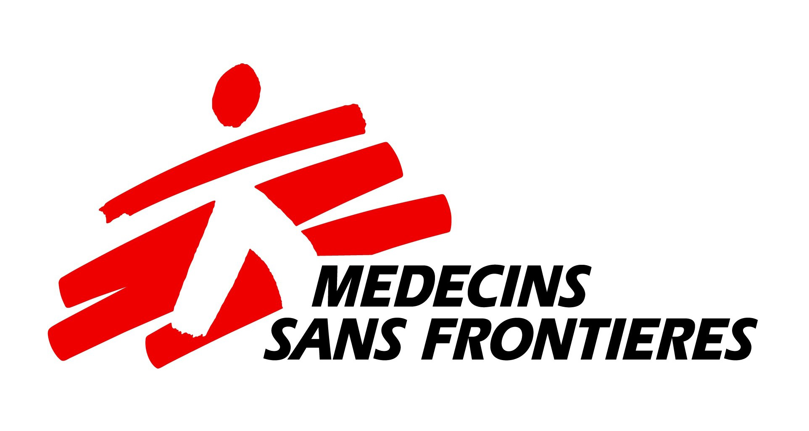

Data Engineer, Product & Innovation, New York, United States
| Organization: |
Médecins Sans Frontières |
| Country: |
United States of America |
| Office: |
MSF USA New York |
What will you do ?
This role will be focused on effectively transitioning engineering practices at MSF-USA into an innovation-focused one though R&D and production-grade products. This transition will also require balancing new projects with existing maintained infrastructure. In both cases, having flexibility, assuming ownership and working iteratively on deliverables will be key to overall success.
Requirements
- Design and implement innovative engineering applications aimed towards strengthening technical capacity at MSF-USA
- Manage the full lifecycle of product ideation, technical build, and delivery to cross-organizational audiences
- Find and propose projects for advancing MSF USA in its data analysis infrastructure and practices
- Source external datasets for enriching and improving internal data report
- Create data models in various styles (relational, dimensional, various sorts of non-relational)
- Advise on and implement best practices for data application architectures
- Communicate end-to-end program development to technical and non-technical stakeholders
- Develop relationships with external innovation groups to expand team efficacy and practices
- Assess and recommend cloud architecture appropriate to a given software solution
- Mentor technical and non-technical collaborators
Qualifications
- 4+ years of software engineering experience. Preference given to candidates with previous work experience in nonprofit organizations or with demonstrated knowledge of the sector.
- Strong understanding of the infrastructure required to enable complex data analysis, processing, and scientific applications
- Experience with one or more major cloud computing platforms (AWS, Google Cloud, Azure)
- Strong experience with R or the scientific Python libraries (Numpy, Pandas, Scikit-learn)
- Experience with data visualization, code based or through a platform
- An ability to express insights as a compelling and understandable story
- Familiarity with the concepts of Machine Learning and Deep Learning. Experience with relevant libraries is a bonus (TensorFlow, PyTorch, SparkML)
- Strong communication skills with both technical and non-technical stakeholders
- Comfort working in a collaborative, associative, and democratized team structure
- Passion for the mission and values of MSF
- A commitment to Diversity, Equity and Inclusion.
- Expected to work in a hybrid work environment
What will be your salary ?
$107,420.04 to $114,440.04 a year
HURRY UP ! APPLY TODAY
MSF-USA is committed to building a diverse, unbiased, and inclusive workforce. MSF-USA is an equal opportunity employer; we recruit, hire, train, promote, develop, and provide other conditions of employment without regard to a person’s gender identity or expression, sexual orientation, race, religion, age, national origin, disability, marital status, pregnancy status, veteran status, genetic information, or any other differences consistent with applicable laws. This includes providing reasonable accommodation for disabilities, or religious beliefs and practices. Members of communities historically underrepresented in the Humanitarian Aid sector are encouraged to apply.